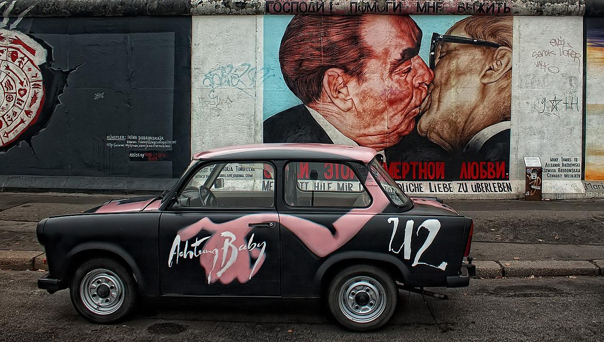
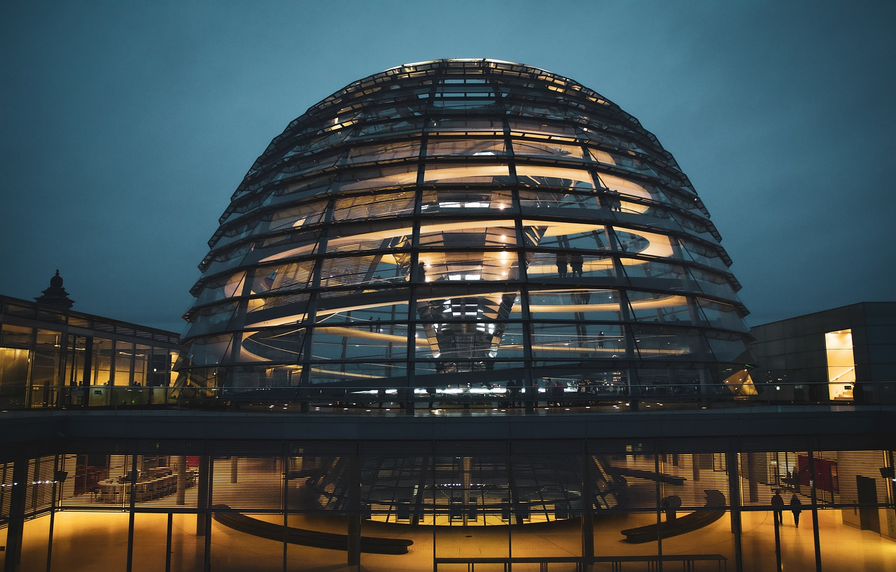
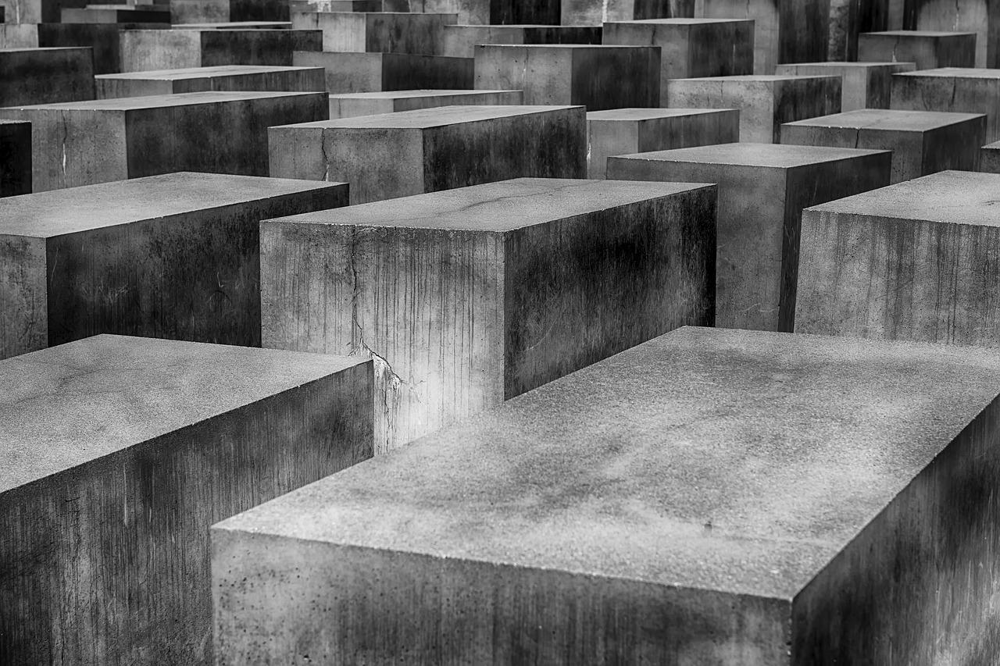
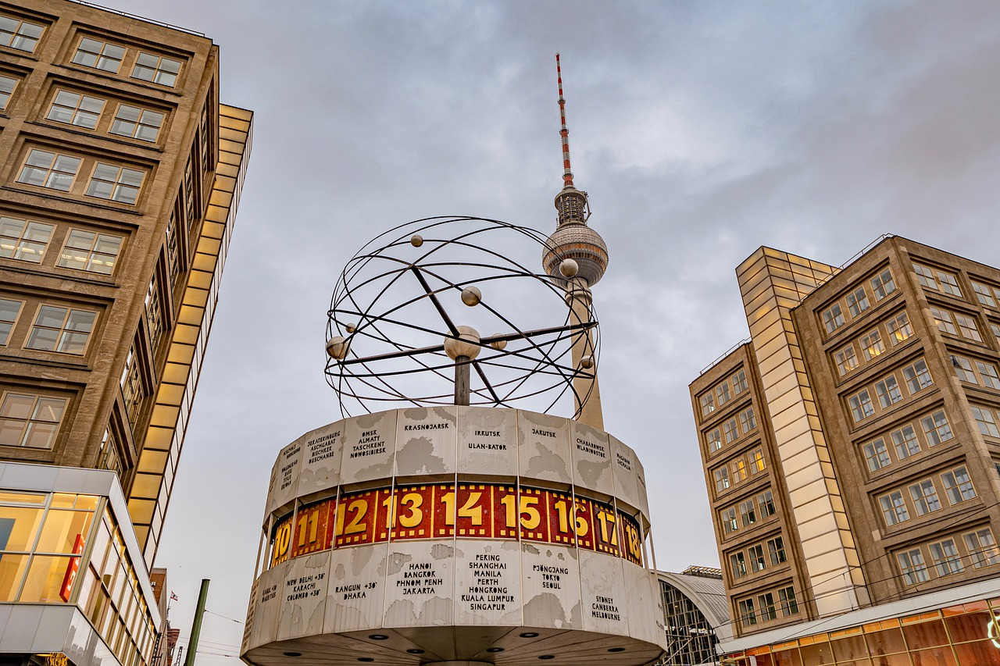

Points of Interest

This mile-long stretch of the Berlin Wall is one of the largest remaining portions of the former divide between East and West Germany.

Situated just north of the Brandenburg Gate, this building houses the German Parliament and was the seat of the Weimar Republic government until it was seized by the Nazis in 1933.

A place of contemplation, a place of remembrance and warning. Close to the Brandenburg Gate in the heart of Berlin you will find the Memorial to the Murdered Jews of Europe.

In the 1970s, Alexanderplatz became an experiment in socialist urban aesthetics. The square is the home to the World Time Clock, a continually rotating installation that shows the time around the globe and Hermann Henselmann’s Haus des Lehrers.